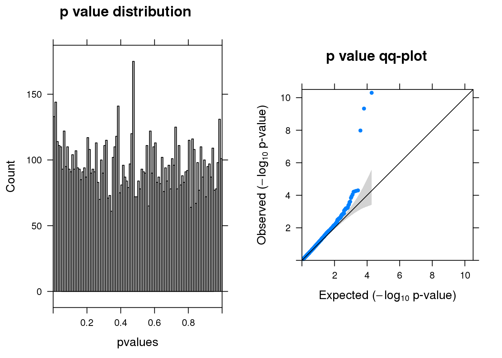
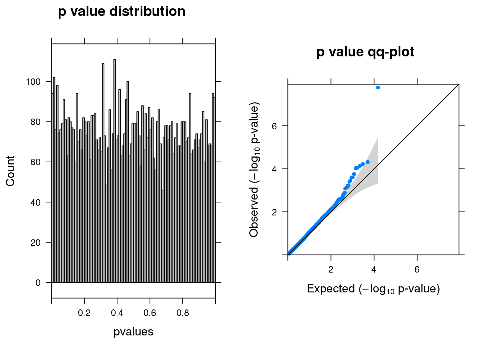

Differential expression analysis–EdgeR quasi-likelihood F-tests
Siming Zhao
December 2, 2018
Last updated: 2018-12-16
workflowr checks: (Click a bullet for more information)-
✖ R Markdown file: uncommitted changes
The R Markdown is untracked by Git. To know which version of the R Markdown file created these results, you’ll want to first commit it to the Git repo. If you’re still working on the analysis, you can ignore this warning. When you’re finished, you can runwflow_publishto commit the R Markdown file and build the HTML. -
✔ Environment: empty
Great job! The global environment was empty. Objects defined in the global environment can affect the analysis in your R Markdown file in unknown ways. For reproduciblity it’s best to always run the code in an empty environment.
-
✔ Seed:
set.seed(20181119)The command
set.seed(20181119)was run prior to running the code in the R Markdown file. Setting a seed ensures that any results that rely on randomness, e.g. subsampling or permutations, are reproducible. -
✔ Session information: recorded
Great job! Recording the operating system, R version, and package versions is critical for reproducibility.
-
Great! You are using Git for version control. Tracking code development and connecting the code version to the results is critical for reproducibility. The version displayed above was the version of the Git repository at the time these results were generated.✔ Repository version: 6b6ebde
Note that you need to be careful to ensure that all relevant files for the analysis have been committed to Git prior to generating the results (you can usewflow_publishorwflow_git_commit). workflowr only checks the R Markdown file, but you know if there are other scripts or data files that it depends on. Below is the status of the Git repository when the results were generated:
Note that any generated files, e.g. HTML, png, CSS, etc., are not included in this status report because it is ok for generated content to have uncommitted changes.Ignored files: Ignored: .Rhistory Ignored: .Rproj.user/ Ignored: analysis/Quality_metrics_cache/ Ignored: analysis/figure/ Untracked files: Untracked: analysis/DEseq2-LRT.Rmd Untracked: analysis/DEseq2-standard.Rmd Untracked: analysis/EdgeR-QLF.Rmd Untracked: docs/figure/DEseq2-standard.Rmd/ Untracked: docs/figure/EdgeR-QLF.Rmd/ Unstaged changes: Modified: analysis/DE_analysis.Rmd Modified: analysis/Quality_metrics.Rmd Modified: analysis/index.Rmd
Load data
source("code/summary_functions.R")
library(dplyr)
load("data/DE_input.Rd")
glocus <- "VPS45"
dim(dm)[1]NULLgcount <- dm[1:(dim(dm)[1]-76), colnames(dm1dfagg)[dm1dfagg[glocus,] >0 & nlocus==1]]
# negative control cells defined as neg gRNA targeted cells
ncount <- dm[1:(dim(dm)[1]-76), colnames(dm1dfagg)[dm1dfagg["neg",] >0 & nlocus==1]]
coldata <- data.frame(row.names = c(colnames(gcount),colnames(ncount)),
condition=c(rep('G',dim(gcount)[2]),rep('N',dim(ncount)[2])))
countall <- cbind(gcount,ncount)
totalcount <- apply(countall,1,sum)
cellpercent <- apply(countall,1,function(x) length(x[x>0])/length(x))edgeR quasi-likelihood F-tests function
library(edgeR)
run_edgeR <- function(y) {
# y is DGElist object
y <- calcNormFactors(y)
group=coldata$condition
design <- model.matrix(~group)
y <- estimateDisp(y,design)
fitqlf <- glmQLFit(y,design)
qlf <- glmQLFTest(fitqlf,coef=2)
summ_pvalues(qlf$table$PValue)
out <- topTags(qlf, n=Inf, adjust.method = "BH")
outsig <- subset(out$table,FDR <0.1)
print(paste0("There are ",dim(outsig)[1], " genes passed FDR <0.1 cutoff"))
print(knitr::kable(signif(as.matrix(head(out$table[order(out$table$PValue),])),digit=2)))
return(out)
}Run edgeR–No filtering
y <- DGEList(counts= countall,group=coldata$condition)
res <- run_edgeR(y)[1] "There are 18 genes passed FDR <0.1 cutoff"
logFC logCPM F PValue FDR
------------------- ------ ------- --- ------- --------
ENSG00000176956.12 -2.8 6.6 59 0 0.0e+00
ENSG00000100097.11 -2.3 6.6 45 0 1.2e-06
ENSG00000130203.9 -1.8 6.4 45 0 1.2e-06
ENSG00000100300.17 -1.6 6.4 41 0 6.0e-06
ENSG00000138136.6 -2.0 6.4 39 0 8.8e-06
ENSG00000089116.3 -1.5 6.3 37 0 7.6e-05Run edgeR–at least one cell UMI > 0
y <- DGEList(counts= countall[totalcount>0,],group=coldata$condition)
res <- run_edgeR(y)
[1] "There are 26 genes passed FDR <0.1 cutoff"
logFC logCPM F PValue FDR
------------------- ------ ------- --- ------- --------
ENSG00000176956.12 -2.8 6.6 59 0 0.0e+00
ENSG00000100097.11 -2.3 6.6 45 0 6.0e-07
ENSG00000130203.9 -1.8 6.4 45 0 6.0e-07
ENSG00000100300.17 -1.6 6.4 41 0 3.2e-06
ENSG00000138136.6 -2.0 6.4 39 0 4.6e-06
ENSG00000089116.3 -1.5 6.3 37 0 4.0e-05Run edgeR–3% cells with UMI > 0
y <- DGEList(counts= countall[cellpercent > 0.03,],group=coldata$condition)
res <- run_edgeR(y)
[1] "There are 20 genes passed FDR <0.1 cutoff"
logFC logCPM F PValue FDR
------------------- ------ ------- --- ------- --------
ENSG00000176956.12 -2.8 6.6 61 0 0.0e+00
ENSG00000100097.11 -2.3 6.6 47 0 2.0e-07
ENSG00000130203.9 -1.9 6.4 47 0 2.0e-07
ENSG00000100300.17 -1.6 6.4 43 0 1.0e-06
ENSG00000175899.14 -1.6 6.9 35 0 1.9e-05
ENSG00000198417.6 -1.6 6.4 34 0 3.5e-05Run edgeR–10%
y <- DGEList(counts= countall[cellpercent > 0.1,],group=coldata$condition)
res <- run_edgeR(y)
[1] "There are 7 genes passed FDR <0.1 cutoff"
logFC logCPM F PValue FDR
------------------- ------ ------- --- -------- --------
ENSG00000100097.11 -2.3 6.6 47 0.0e+00 5.0e-07
ENSG00000100300.17 -1.6 6.4 42 0.0e+00 2.3e-06
ENSG00000175899.14 -1.6 6.9 35 0.0e+00 3.4e-05
ENSG00000119906.11 1.1 6.5 20 5.0e-05 8.4e-02
ENSG00000111057.10 1.3 7.1 17 5.3e-05 8.4e-02
ENSG00000170293.8 1.1 6.6 17 5.7e-05 8.4e-02Run edgeR–20%
y <- DGEList(counts= countall[cellpercent > 0.2,],group=coldata$condition)
res <- run_edgeR(y)
[1] "There are 1 genes passed FDR <0.1 cutoff"
logFC logCPM F PValue FDR
------------------- ------ ------- --- -------- --------
ENSG00000175899.14 -1.60 6.9 34 0.0e+00 0.00013
ENSG00000119906.11 1.10 6.5 20 4.8e-05 0.12000
ENSG00000170293.8 1.10 6.6 17 5.9e-05 0.12000
ENSG00000111057.10 1.30 7.1 16 7.3e-05 0.12000
ENSG00000172020.12 -0.91 8.2 16 9.0e-05 0.12000
ENSG00000219626.8 -0.99 6.5 18 9.2e-05 0.12000Parameters used
- We used data processed after QC step here.
- targeted locus, choose VPS45.
Session information
sessionInfo()R version 3.5.1 (2018-07-02)
Platform: x86_64-apple-darwin14.5.0 (64-bit)
Running under: OS X El Capitan 10.11.6
Matrix products: default
BLAS: /System/Library/Frameworks/Accelerate.framework/Versions/A/Frameworks/vecLib.framework/Versions/A/libBLAS.dylib
LAPACK: /System/Library/Frameworks/Accelerate.framework/Versions/A/Frameworks/vecLib.framework/Versions/A/libLAPACK.dylib
locale:
[1] en_US.UTF-8/en_US.UTF-8/en_US.UTF-8/C/en_US.UTF-8/en_US.UTF-8
attached base packages:
[1] grid stats graphics grDevices utils datasets methods
[8] base
other attached packages:
[1] gridExtra_2.3 lattice_0.20-35 edgeR_3.22.5 limma_3.36.5
[5] Matrix_1.2-14 dplyr_0.7.6
loaded via a namespace (and not attached):
[1] Rcpp_1.0.0 compiler_3.5.1 pillar_1.3.0
[4] git2r_0.23.0 highr_0.7 workflowr_1.1.1
[7] bindr_0.1.1 R.methodsS3_1.7.1 R.utils_2.7.0
[10] tools_3.5.1 digest_0.6.18 evaluate_0.12
[13] tibble_1.4.2 gtable_0.2.0 pkgconfig_2.0.2
[16] rlang_0.3.0.1 yaml_2.2.0 bindrcpp_0.2.2
[19] stringr_1.3.1 knitr_1.20 locfit_1.5-9.1
[22] rprojroot_1.3-2 tidyselect_0.2.4 glue_1.3.0
[25] R6_2.3.0 rmarkdown_1.10 purrr_0.2.5
[28] magrittr_1.5 whisker_0.3-2 backports_1.1.2
[31] htmltools_0.3.6 splines_3.5.1 assertthat_0.2.0
[34] stringi_1.2.4 crayon_1.3.4 R.oo_1.22.0 This reproducible R Markdown analysis was created with workflowr 1.1.1